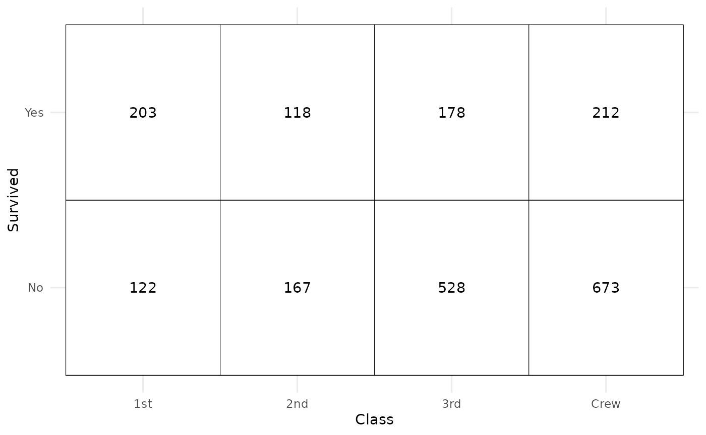

Compute cross-tabulation statistics with `stat_cross()`
Source:vignettes/stat_cross.Rmd
stat_cross.RmdThis statistic is intended to be used with two discrete variables
mapped to x and y aesthetics. It will
compute several statistics of a cross-tabulated table using
broom::tidy.test() and stats::chisq.test().
More precisely, the computed variables are:
- observed: number of observations in x,y
- prop: proportion of total
- row.prop: row proportion
- col.prop: column proportion
- expected: expected count under the null hypothesis
- resid: Pearson’s residual
- std.resid: standardized residual
- row.observed: total number of observations within row
- col.observed: total number of observations within column
- total.observed: total number of observations within the table
-
phi: phi coefficients, see
augment_chisq_add_phi()
By default, stat_cross() is using
ggplot2::geom_points(). If you want to plot the number of
observations, you need to map after_stat(observed) to an
aesthetic (here size):
d <- as.data.frame(Titanic)
ggplot(d) +
aes(x = Class, y = Survived, weight = Freq, size = after_stat(observed)) +
stat_cross() +
scale_size_area(max_size = 20)
Note that the weight aesthetic is taken into account
by stat_cross().
We can go further using a custom shape and filling points with standardized residual to identify visually cells who are over- or underrepresented.
ggplot(d) +
aes(
x = Class, y = Survived, weight = Freq,
size = after_stat(observed), fill = after_stat(std.resid)
) +
stat_cross(shape = 22) +
scale_fill_steps2(breaks = c(-3, -2, 2, 3), show.limits = TRUE) +
scale_size_area(max_size = 20)
We can easily recreate a cross-tabulated table.
ggplot(d) +
aes(x = Class, y = Survived, weight = Freq) +
geom_tile(fill = "white", colour = "black") +
geom_text(stat = "cross", mapping = aes(label = after_stat(observed))) +
theme_minimal()
Even more complicated, we want to produce a table showing column
proportions and where cells are filled with standardized residuals. Note
that stat_cross() could be used with facets. In that case,
computation is done separately in each facet.
ggplot(d) +
aes(
x = Class, y = Survived, weight = Freq,
label = scales::percent(after_stat(col.prop), accuracy = .1),
fill = after_stat(std.resid)
) +
stat_cross(shape = 22, size = 30) +
geom_text(stat = "cross") +
scale_fill_steps2(breaks = c(-3, -2, 2, 3), show.limits = TRUE) +
facet_grid(rows = vars(Sex)) +
labs(fill = "Standardized residuals") +
theme_minimal()